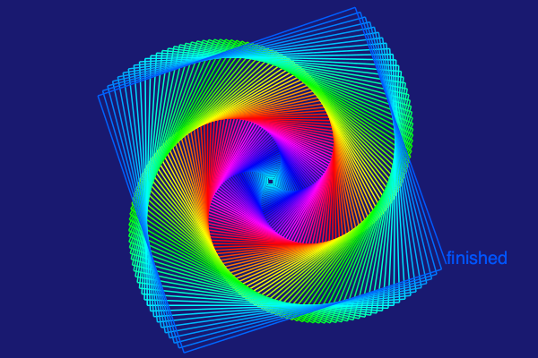
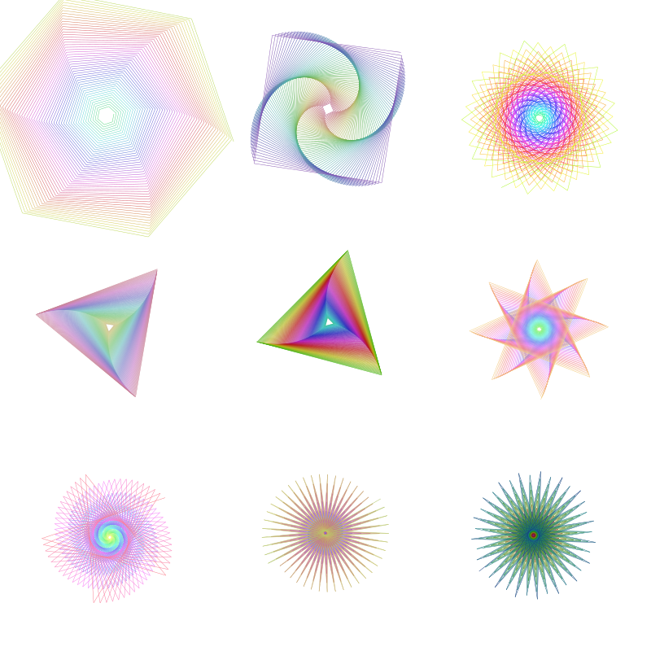
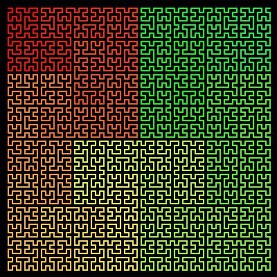

Turtle graphics
Luxor provides some basic "turtle graphics" functions. Functions to control the turtle begin (somewhat unusually) with a capital letter: Forward, Turn, Circle, Orientation, Towards, Rectangle, Pendown, Penup, Pencolor, Penwidth, and Reposition, and so on, and angles are specified in degrees rather than radians.
using Luxor, Colors
Drawing(600, 400, "../assets/figures/turtles.png")
origin()
background("midnightblue")
🐢 = Turtle() # you can type the turtle emoji with \:turtle:
Pencolor(🐢, "cyan")
Penwidth(🐢, 1.5)
n = 5
for i in 1:400
global n
Forward(🐢, n)
Turn(🐢, 89.5)
HueShift(🐢)
n += 0.75
end
fontsize(20)
Message(🐢, "finished")
finish()
| List of words the turtle knows | Action |
|---|---|
Forward | More forward by d units |
Turn | Increase the turtle's rotation by n degrees |
Circle | Draw filled circle centered at current pos |
HueShift | Shift the Hue of the turtle's pen color by n |
Message | Output text |
Orientation | Set the turtle's orientation to n degrees |
Pen_opacity_random | Set opacity to random value |
Pencolor | Set the Red, Green, and Blue values |
Pendown | Start drawing |
Penup | Stop drawing |
Penwidth | Set the width of the line to n |
Pop | Move turtle to the value stored on the stack |
Push | Save the turtle's position on the stack |
Randomize_saturation | Randomize the saturation of the current color |
Rectangle | Draw filled rectangle centered at current pos |
Reposition | Place turtle at new position |
Towards | Rotate turtle to face towards a point |
The turtle commands expect a reference to a turtle as the first argument (it doesn't have to be a turtle emoji!), and you can have any number of turtles active at a time.
quantity = 9
turtles = [Turtle(O, true, 2π * rand(), (rand(), rand(), 0.5)...) for i in 1:quantity]
Reposition.(turtles, first.(collect(Tiler(800, 800, 3, 3))))
n = 10
Penwidth.(turtles, 0.5)
for i in 1:300
global n
Forward.(turtles, n)
HueShift.(turtles)
Turn.(turtles, [60.1, 89.5, 110, 119.9, 120.1, 135.1, 145.1, 176, 190])
n += 0.5
end
finish() # hide
A turtle graphics approach lends itself well to recursive programming. This short recursive function draws a Hilbert curve.
function hilbert(t::Turtle, level, angle, lengthstep)
level == 0 && return
HueShift(t, 0.1)
Turn(t, angle)
hilbert(t, level-1, -angle, lengthstep)
Forward(t, lengthstep)
Turn(t, -angle)
hilbert(t, level-1, angle, lengthstep)
Forward(t, lengthstep)
hilbert(t, level-1, angle, lengthstep)
Turn(t, -angle)
Forward(t, lengthstep)
hilbert(t, level-1, -angle, lengthstep)
Turn(t, angle)
end
@draw begin
background("black")
setline(2)
setlinecap("round")
hilbert(Turtle(first(BoundingBox()) + (12, 12), true, 0, (1, 0, 0)),
6, # level
90, # turn angle, in degrees
6 # steplength
)
end